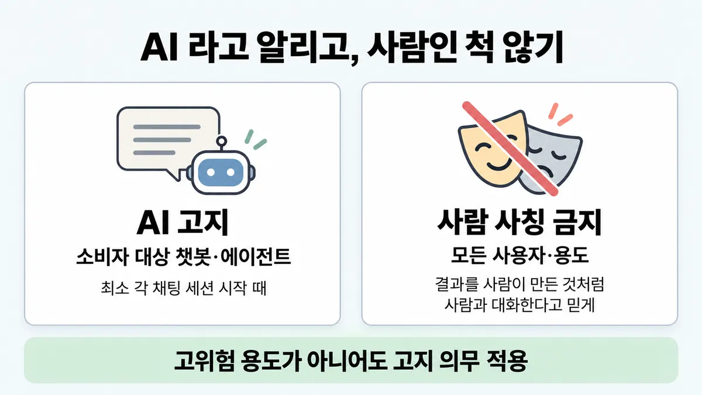
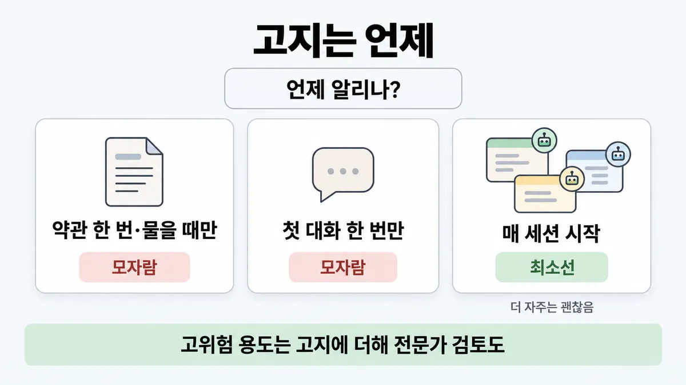
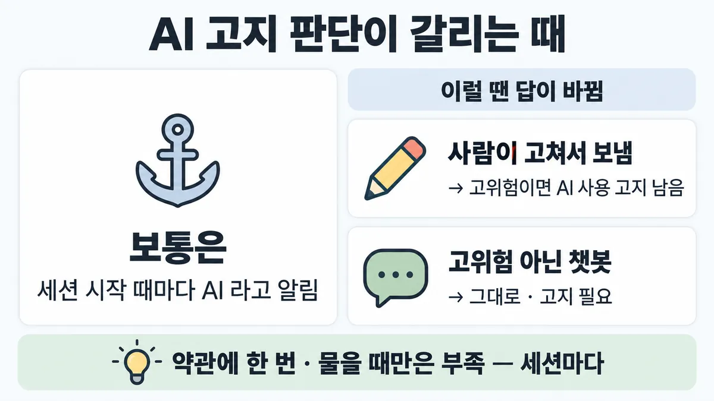

■ AI 고지·사람 사칭 금지
표시가 없는 문장은 공식 문서에서 확인한 내용이에요. 다른 표시는 읽는 법
왜 배우나 — 시험이 요구하는 것
시험 목표 5.5 편향·공정·투명 · D5 규정·안전 14%Address ethical AI considerations (bias, fairness, transparency)
이 개념으로 푸는 판단 (할 수 있어야 하는 것)
- 5.5① 고객지원 챗봇 — 사람처럼 보이게 해도 되나? — AI 고지·사람 사칭 금지 (투명성의 최소선)
한눈에
소비자 대상 챗봇(외부 대상·대화형 AI 에이전트 포함)은 사람이 아니라 AI 와 대화 중임을 알려야 함. 최소 각 채팅 세션 시작 때. 고위험(high-risk) 용도가 아니어도 고지 의무가 적용됨 (Additional Use Case Guidelines) (2026-09-28 조회)
사람 사칭(impersonation) = 결과를 사람이 만든 것처럼 내놓거나, 사람과 대화한다고 믿게 하는 것 → Universal Usage Standards = 모든 사용자·용도에 금지 (2026-09-28 조회)
비유 자동 발송 메일의 "발신 전용 · 자동 발송" 표기. 메신저 봇 계정에 붙는 봇 배지


ELI5
가게 앞 자동 안내 방송이 "저는 녹음된 안내예요" 하고 먼저 말하는 거예요.
- 상대가 사람인지 기계인지 손님이 알아야 해요.
- 대화를 새로 시작할 때마다 말해 줘요.
- 기계가 사람인 척하는 건 어디서든 안 돼요.
- 중요한 일(돈·병원 같은)이면 사람이 한 번 더 봐요.
개념 설명
원리
왜 알리나
- AUP 고위험(high-risk) 절의 이유 문장 : 최종 사용자는 결과를 만드는 데 AI 가 끼었는지 알아야 함 (en-aup). 사람은 상대가 AI 인지 알아야 얼마나 믿을지 정함.
조항 셋이 겹침
- Universal Usage Standards : 모든 사용자·용도. 사람 사칭(impersonation) 금지(결과를 사람이 만든 것처럼 · 사람과 대화한다고 믿게) = "Do Not Compromise Privacy or Identity Rights" 절 (en-aup · headings).
- Additional Use Case Guidelines : 고위험이든 아니든. 소비자 대상 챗봇(외부 대상·대화형 AI 에이전트 포함) → AI 와 대화 중이라고 최소 각 채팅 세션 시작 때 (en-aup).
- High-Risk Use Case Requirements : 결과를 개인·소비자가 직접 보면 "AI 를 써서 조언·결정·추천을 만든다"고 최소 각 세션 시작 때 + 자격 있는 전문가 검토 (en-aup) → ■ AUP 고위험 용도.
고지(disclosure) ≠ 사칭 금지
- 고지 = 해야 할 일(적극). 사칭 금지 = 하면 안 될 일(소극). 둘 다 지켜야 함. AI 라고 밝혀 놓고 대화 중에 "저는 사람이에요" 라고 하면 고지는 했어도 사칭.
에이전트·집행
- 에이전트 용도도 AUP 를 똑같이 지켜야 함 (en-aup).
- 위반하면 throttle(속도 제한)·정지·해지, 출력 차단·수정 가능 (en-aup).
규칙과 판단


갈림길
①② 고지 의무 있나 [5.5①]
AI 사용 고지 + 전문가 검토
AI 를 써서 조언·결정·추천을 만든다고 각 세션 시작 때 알림 → ■ AUP 고위험 용도 · 소비자 대상 챗봇 고지는 고위험 여부와 상관없이 적용 (2026-09-28 조회)
매 채팅 세션 시작 때 고지
사람이 아니라 AI 와 대화 중임을 알림 (2026-09-28 조회)
문구는 consumer-facing 만 언급
고지 문구는 consumer-facing 만 언급함. 사람 사칭 금지는 모든 용도 (설명 쪽 미해결)
② 언제 고지 [5.5①]
모자람
최소 각 채팅 세션 시작 때
모자람
세션마다
최소선
"at a minimum" — 그보다 자주는 괜찮음
③ 사칭이냐 [5.5①]
금지
사람과 대화한다고 믿게 함 = 사람 사칭 + 고지 위반
금지
결과를 사람이 만든 것처럼 내놓음
고지하면 됨
업계 일반 AUP 는 가짜 페르소나로 출처를 속이는 것을 금지
나머지 규칙
-
에이전트도 똑같이 : agentic use 도 AUP 를 지켜야 함. 위반이면 throttle(속도 제한)·정지·해지 가능 (2026-09-28 조회) [5.5①]
규칙 원문 ①②③ (갈림길로 그린 규칙)
-
소비자 대상 챗봇 고지 : 외부 대상·대화형 AI 에이전트 포함, 사람이 아니라 AI 와 대화 중임을 알림. 최소 각 채팅 세션 시작 때("at a minimum" — 그보다 자주는 괜찮음). 고위험 여부와 상관없이 적용 (2026-09-28 조회) [5.5①]
-
고지 조항은 둘 — 문구가 다름 (2026-09-28 조회) [5.5①]
조항 대상 알릴 내용 시점 Additional Use Case Guidelines 모든 소비자 대상 챗봇 AI 와 대화 중 (사람 아님) 최소 각 채팅 세션 시작 High-Risk Use Case Requirements 결과를 개인·소비자가 직접 보는 고위험 용도 AI 를 써서 조언·결정·추천을 만든다 최소 각 세션 시작 고위험 용도는 고지에 더해 자격 있는 전문가 검토(human-in-the-loop) → ■ AUP 고위험 용도
직원만 쓰는 내부 도구 : 챗봇 고지 문구는 consumer-facing 만 언급함 (설명 쪽 미해결)
-
사람 사칭 금지 : 결과를 사람이 만든 것처럼 내놓기 · 사람과 대화한다고 믿게 하기 = Universal Usage Standards(Do Not Compromise Privacy or Identity Rights 절) → 모든 사용자·용도 (2026-09-28 조회) [5.5①]
비슷한 금지 : 동의·권한 없이 가짜 페르소나로 출처를 속이기 · AI 가 만든 것임을 숨긴 대량 자동 정치 메시지 (2026-09-28 조회)
AI 라고 밝힌 이름 있는 봇은 고지하면 됨 업계 일반 AUP 는 가짜 페르소나로 출처를 속이는 것을 금지
더 깊이 : 판단 규칙 · 상황 변수 (설명)
판단 규칙
| 조건 | 답 | 등급 | 근거 |
|---|---|---|---|
| 소비자 대상 챗봇·대화형 에이전트 | 사람이 아니라 AI 와 대화 중이라고 알림, 최소 각 채팅 세션 시작 때 | (2026-09-28 조회) | en-aup "All consumer-facing chatbots, including any external-facing or interactive AI agent, must disclose to users that they are interacting with AI rather than a human." |
| 고위험 용도 7종(법률 · 의료 · 보험 · 금융 · 고용·주거 · 시험·인증·입학 · 언론) 결과를 개인이 직접 봄 | AI 를 써서 만든다고 각 세션 시작 때 알림 + 전문가 검토 | (2026-09-28 조회) | en-aup |
| 결과를 사람이 쓴 것처럼 내거나 사람과 대화한다고 믿게 함 | 모든 용도에서 금지 | (2026-09-28 조회) | en-aup |
| 동의·권한 없이 가짜 페르소나로 출처를 속임 | 금지 | (2026-09-28 조회) | en-aup · headings(Misinformation 절) |
| 에이전트가 자동으로 메시지를 보냄 | 같은 규칙. agentic use 도 AUP 적용 | (2026-09-28 조회) | en-aup |
상황 변수
| 변수 | 값 | 답 쪽 | 등급 | 근거 |
|---|---|---|---|---|
| 받는 사람 | 외부 소비자 | 챗봇 고지 필요 | 판단 규칙 1 | |
| 받는 사람 | 직원만 | 챗봇 고지 문구는 consumer-facing 만 말함. 사칭 금지는 그대로 | 미해결 | 미해결 1 |
| 용도 | 고위험 7종 | 고지 + 전문가 검토 | 판단 규칙 2 | |
| 용도 | 웰니스 조언(수면·스트레스·영양·운동) | 의료 고위험에서 빠짐 → 챗봇이면 챗봇 고지만 | en-aup | |
| 세션 수 | 한 고객이 하루 3번 새 채팅을 엶 | 3번 모두 시작 때 고지 | en-aup "each chat session" | |
| 봇 이름 | 브랜드 이름 + AI 라고 밝힘 | 고지만 하면 됨 | 업계 일반 | AUP 에 페르소나 허용 문장은 없음 |
| 채널 | 음성 콜봇 | 문구는 "chatbots · interactive AI agent" → 대화형이면 같은 규칙으로 보는 게 안전 | 업계 일반 | en-aup |
연습 문제
온라인 쇼핑몰이 고객이 웹사이트에서 바로 쓰는 반품 접수 챗봇소비자 대상을 연다. 법무팀은 "대출·의료 같은 고위험 용도가 아니니 약관에 한 줄만 적자" 고 한다. 한 고객이 하루에 채팅을 세 번 새로 열기도 한다. AI 고지(disclosure)는 어떻게 해야 할까?
시험 대비
함정
- 상담 전환율 오른다고 Agent 에 사람 이름·사진 붙이고 AI 표시 뺌 → 사람 사칭 + 고지 위반
- "약관에 한 번 적으면 충분" / "사용자가 물어볼 때만 밝힘" → 최소 각 채팅 세션 시작 때
- "첫 대화에서 한 번만" → 세션마다
- "고위험 용도(대출·의료 등)만 고지 의무" → 소비자 대상 챗봇은 고위험 아니어도 고지
- "AI 고지만 하면 고위험 용도도 끝" → 고위험 용도는 전문가 검토도 필요 → ■ AUP 고위험 용도
신호
"All consumer-facing chatbots, including any external-facing or interactive AI agent, must disclose to users that they are interacting with AI rather than a human."
"This disclosure must be provided at a minimum at the beginning of each chat session."
"Impersonate a human by presenting results as human-generated, or using results in a manner intended to convince a natural person that they are communicating with a natural person when they are not"
"Our Universal Usage Standards apply to all users and use cases."
"end-users should be aware when AI has been involved in producing outputs"


더 깊이 : 뒤집히는 때 · 오답 재료 (설명)
뒤집히는 때
1. AI 초안을 사람 상담원이 고쳐서 보냄
- 조건 : 상담원이 Claude 초안을 읽고 고친 뒤 자기 이름으로 보냄. 고객은 상담원과 대화 중.
- 판단 : 고객이 대화하는 상대가 실제로 사람이면 "사람과 대화한다고 믿게" 에는 해당 안 됨. 다만 "결과를 사람이 만든 것처럼 내놓음"(59줄 앞부분)과, 고위험 용도면 "AI 를 써서 만든다" 고지가 남음.
- 등급 : 미해결 (사람 손을 얼마나 거치면 "사람이 만든 것" 인지 원문 기준 없음)
- 근거 : en-aup
2. 한 세션이 아주 긺
- 조건 : 콜센터 채팅이 한 세션 안에서 40분 이어짐.
- 판단 : 원문은 "최소 세션 시작 때". 중간에 다시 알리라는 요구는 없음 — 더 자주 알리는 건 "at a minimum" 이라 허용.
- 등급 : (최소선) · 중간 재고지는 선택
- 근거 : en-aup
3. 고위험 아님인데 "고지 안 해도 됨"?
- 조건 : 반품 접수 챗봇(고위험 7종 밖).
- 판단 : 안 뒤집힘. 챗봇 고지는 고위험 여부와 상관없음("regardless of whether they are High-Risk Use Cases").
- 근거 : en-aup
오답 재료
| 오답 | 왜 끌리나 | 왜 틀리나 | 근거 |
|---|---|---|---|
| "상담 전환율을 위해 사람 이름·사진을 붙이고 AI 표시를 뺀다" | 비즈니스 지표가 오름 | 사람 사칭 금지(모든 용도) + 챗봇 고지 위반 | en-aup |
| "약관(이용 약관)에 한 번 적으면 충분" | 법무 관행 같음 | 최소 각 채팅 세션 시작 때 사용자에게 | en-aup |
| "첫 대화에서 한 번만 알리면 된다" | 반복이 번거로움 | "each chat session" — 세션마다 | en-aup |
| "사용자가 '사람이에요?' 라고 물을 때만 밝힌다" | 거짓말은 안 했으니 | 먼저 알려야 함. 묻기 전까지 사람인 척 두면 사칭 쪽 | en-aup |
| "고위험 용도만 고지 의무가 있다" | 고위험 절에 Disclosure 조항이 따로 있음 | 챗봇 고지는 Additional Use Case Guidelines — 고위험이든 아니든 | en-aup |
| "AI 라고 알렸으니 대출 결정도 자동으로 내보내도 된다" | 투명성(transparency)은 채웠으니 | 고위험은 전문가 검토가 따로 필요 | en-aup → ■ AUP 고위험 용도 |
| "에이전트는 챗봇이 아니라 규칙 밖" | 이름이 다름 | "including any external-facing or interactive AI agent" · agentic use 도 AUP 적용 | en-aup |
참고
개념
출처
- 가이드 목표 5.5 공식 시험 가이드 v1.0
- Usage Policy (en-aup, 페이지 표기 Effective September 15, 2025)
- AUP 절 제목 (en-aup-headings-20260928)
상태
- 업계 일반 1줄(이름 있는 봇)
- 미해결 1줄(내부 도구)
미해결
- 직원만 쓰는 내부 도구 : 챗봇 고지 문구는 "consumer-facing" 만 말함 → 내부 도구에 고지 의무가 있는지 원문 문장 없음. 사람 사칭 금지(Universal)는 모든 용도라 그대로 적용.
- 고지 조항 문구 차이 (같은 AUP 안) : 챗봇 = "that they are interacting with AI rather than a human" · "at a minimum at the beginning of each chat session" / 고위험 = "that you are using AI to help produce your advice, decisions, or recommendations" · "at a minimum at the beginning of each session". 시험 보기가 둘을 섞으면 대상(모든 챗봇 vs 고위험 결과)을 먼저 가를 것.
- 사람이 AI 초안을 고쳐 보낼 때 "사람이 만든 것" 기준 없음 (뒤집히는 때 1).
- defuddle 판 AUP(en-aup.md)는 Universal 절 제목이 빠져 있음 → opencli 로 제목만 따로 받아 en-aup-headings-20260928.md 에 둠. 페이지 표기 = Effective September 15, 2025 (가이드 2026-07 보다 앞 → 시험 뒤 변경 없음).
- 목록(5.5①) 과 원문 차이 : 목록 정답 규칙은 챗봇 고지만 적고 고위험 고지의 다른 문구(알릴 내용 · "session")는 안 적음 → 카드 ② 표로 보충. 목록 영어 신호 3개는 원문에서 모두 찾음(en-aup, 굵은 글씨 표시만 다름).